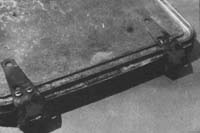

The completed waffle iron "ready for the oven and a puddle of batter". Note the small metal handle which has been added to one corner of the iron's top plate ... to make it easier to open the iron, of course, and take out the finished waffles. This is recycling at its most appetizing ... and a project simple enough for almost anyone to handle.